Activation Functions
Contents
Activation Functions#
Linear#
A straight line function where activation is proportional to input ( which is the weighted sum from neuron ).
Function |
Derivative |
\[\begin{split}R(z,m) = \begin{Bmatrix} z*m \\
\end{Bmatrix}\end{split}\]
|
\[\begin{split}R'(z,m) = \begin{Bmatrix} m \\
\end{Bmatrix}\end{split}\]
|
| 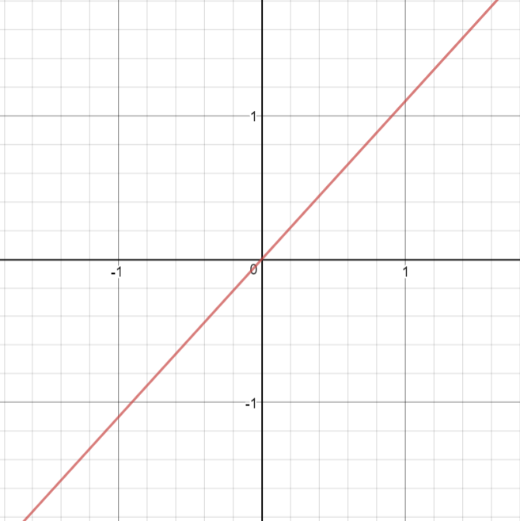 | 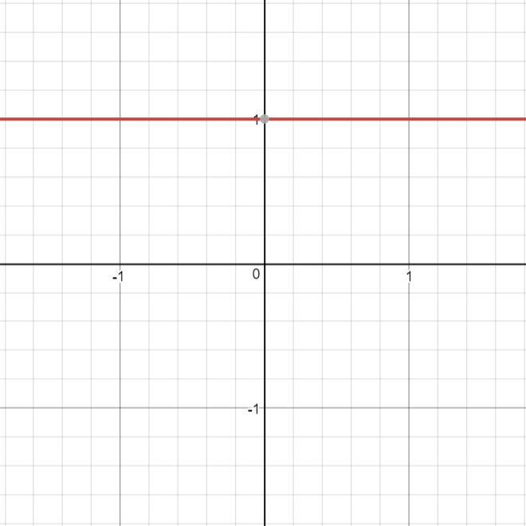 |
def linear(z,m):
return m*z
|
def linear_prime(z,m):
return m
|
{kind=link}
{kind=link}
Pros
It gives a range of activations, so it is not binary activation.
We can definitely connect a few neurons together and if more than 1 fires, we could take the max ( or softmax) and decide based on that.
Cons
For this function, derivative is a constant. That means, the gradient has no relationship with X.
It is a constant gradient and the descent is going to be on constant gradient.
If there is an error in prediction, the changes made by back propagation is constant and not depending on the change in input delta(x) !
ELU#
Exponential Linear Unit or its widely known name ELU is a function that tend to converge cost to zero faster and produce more accurate results. Different to other activation functions, ELU has a extra alpha constant which should be positive number.
ELU is very similiar to RELU except negative inputs. They are both in identity function form for non-negative inputs. On the other hand, ELU becomes smooth slowly until its output equal to -α whereas RELU sharply smoothes.
Function |
Derivative |
\[\begin{split}R(z) = \begin{Bmatrix} z & z > 0 \\
α.( e^z – 1) & z <= 0 \end{Bmatrix}\end{split}\]
|
\[\begin{split}R'(z) = \begin{Bmatrix} 1 & z>0 \\
α.e^z & z<0 \end{Bmatrix}\end{split}\]
|
| 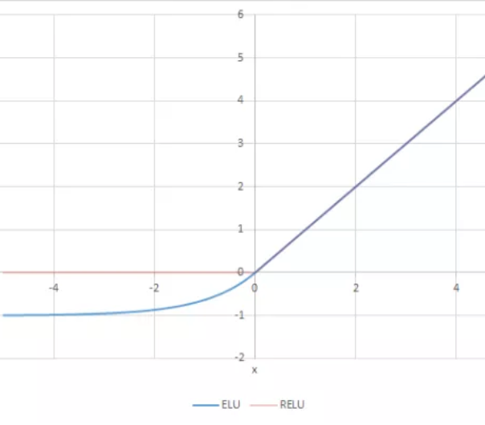 | 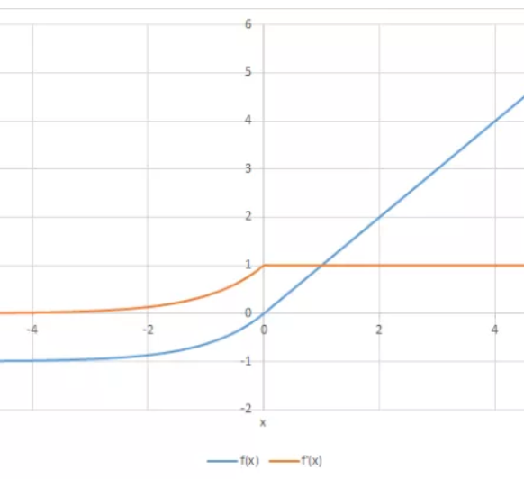 |
def elu(z,alpha):
return z if z >= 0 else alpha*(e^z -1)
|
def elu_prime(z,alpha):
return 1 if z > 0 else alpha*np.exp(z)
|
{kind=link}
{kind=link}
Pros
ELU becomes smooth slowly until its output equal to -α whereas RELU sharply smoothes.
ELU is a strong alternative to ReLU.
Unlike to ReLU, ELU can produce negative outputs.
Cons
For x > 0, it can blow up the activation with the output range of [0, inf].
ReLU#
A recent invention which stands for Rectified Linear Units. The formula is deceptively simple: \(max(0,z)\). Despite its name and appearance, it’s not linear and provides the same benefits as Sigmoid (i.e. the ability to learn nonlinear functions), but with better performance.
Function |
Derivative |
\[\begin{split}R(z) = \begin{Bmatrix} z & z > 0 \\
0 & z <= 0 \end{Bmatrix}\end{split}\]
|
\[\begin{split}R'(z) = \begin{Bmatrix} 1 & z>0 \\
0 & z<0 \end{Bmatrix}\end{split}\]
|
| 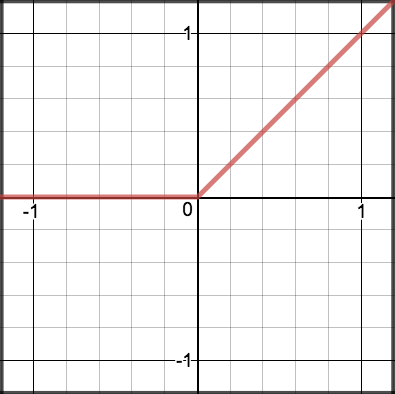 | 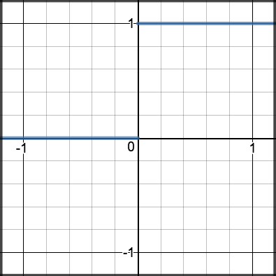 |
def relu(z):
return max(0, z)
|
def relu_prime(z):
return 1 if z > 0 else 0
|
{kind=link}
{kind=link}
Pros
It avoids and rectifies vanishing gradient problem.
ReLu is less computationally expensive than tanh and sigmoid because it involves simpler mathematical operations.
Cons
One of its limitations is that it should only be used within hidden layers of a neural network model.
Some gradients can be fragile during training and can die. It can cause a weight update which will makes it never activate on any data point again. In other words, ReLu can result in dead neurons.
In another words, For activations in the region (x<0) of ReLu, gradient will be 0 because of which the weights will not get adjusted during descent. That means, those neurons which go into that state will stop responding to variations in error/ input (simply because gradient is 0, nothing changes). This is called the dying ReLu problem.
The range of ReLu is \([0, \infty)\). This means it can blow up the activation.
Further reading
Deep Sparse Rectifier Neural Networks Glorot et al., (2011)
Yes You Should Understand Backprop, Karpathy (2016)
LeakyReLU#
LeakyRelu is a variant of ReLU. Instead of being 0 when \(z < 0\), a leaky ReLU allows a small, non-zero, constant gradient \(\alpha\) (Normally, \(\alpha = 0.01\)). However, the consistency of the benefit across tasks is presently unclear. 1
Function |
Derivative |
\[\begin{split}R(z) = \begin{Bmatrix} z & z > 0 \\
\alpha z & z <= 0 \end{Bmatrix}\end{split}\]
|
\[\begin{split}R'(z) = \begin{Bmatrix} 1 & z>0 \\
\alpha & z<0 \end{Bmatrix}\end{split}\]
|
| 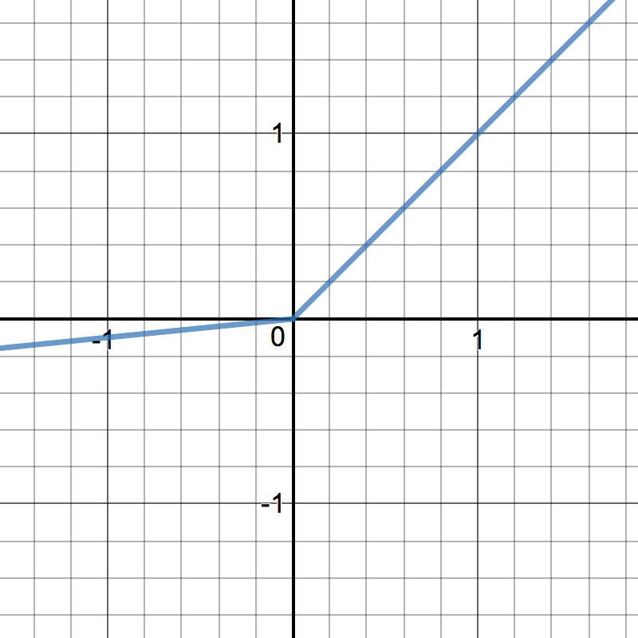 | 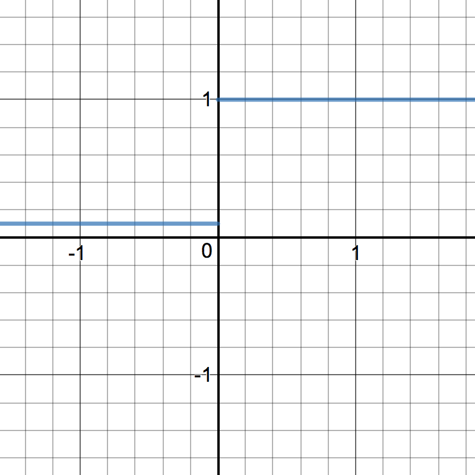 |
def leakyrelu(z, alpha):
return max(alpha * z, z)
|
def leakyrelu_prime(z, alpha):
return 1 if z > 0 else alpha
|
{kind=link}
{kind=link}
Pros
Leaky ReLUs are one attempt to fix the “dying ReLU” problem by having a small negative slope (of 0.01, or so).
Cons
As it possess linearity, it can’t be used for the complex Classification. It lags behind the Sigmoid and Tanh for some of the use cases.
Further reading
Delving Deep into Rectifiers: Surpassing Human-Level Performance on ImageNet Classification, Kaiming He et al. (2015)
Sigmoid#
Sigmoid takes a real value as input and outputs another value between 0 and 1. It’s easy to work with and has all the nice properties of activation functions: it’s non-linear, continuously differentiable, monotonic, and has a fixed output range.
Function |
Derivative |
\[S(z) = \frac{1} {1 + e^{-z}}\]
|
\[S'(z) = S(z) \cdot (1 - S(z))\]
|

|
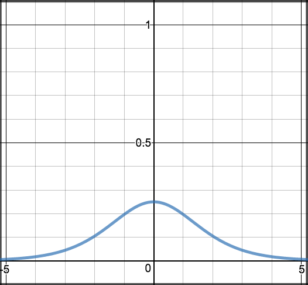 |
def sigmoid(z):
return 1.0 / (1 + np.exp(-z))
|
def sigmoid_prime(z):
return sigmoid(z) * (1-sigmoid(z))
|
{kind=link}
Pros
It is nonlinear in nature. Combinations of this function are also nonlinear!
It will give an analog activation unlike step function.
It has a smooth gradient too.
It’s good for a classifier.
The output of the activation function is always going to be in range (0,1) compared to (-inf, inf) of linear function. So we have our activations bound in a range. Nice, it won’t blow up the activations then.
Cons
Towards either end of the sigmoid function, the Y values tend to respond very less to changes in X.
It gives rise to a problem of “vanishing gradients”.
Its output isn’t zero centered. It makes the gradient updates go too far in different directions. 0 < output < 1, and it makes optimization harder.
Sigmoids saturate and kill gradients.
The network refuses to learn further or is drastically slow ( depending on use case and until gradient /computation gets hit by floating point value limits ).
Further reading
Yes You Should Understand Backprop, Karpathy (2016)
Tanh#
Tanh squashes a real-valued number to the range [-1, 1]. It’s non-linear. But unlike Sigmoid, its output is zero-centered. Therefore, in practice the tanh non-linearity is always preferred to the sigmoid nonlinearity. 1
Function |
Derivative |
\[tanh(z) = \frac{e^{z} - e^{-z}}{e^{z} + e^{-z}}\]
|
\[tanh'(z) = 1 - tanh(z)^{2}\]
|
| 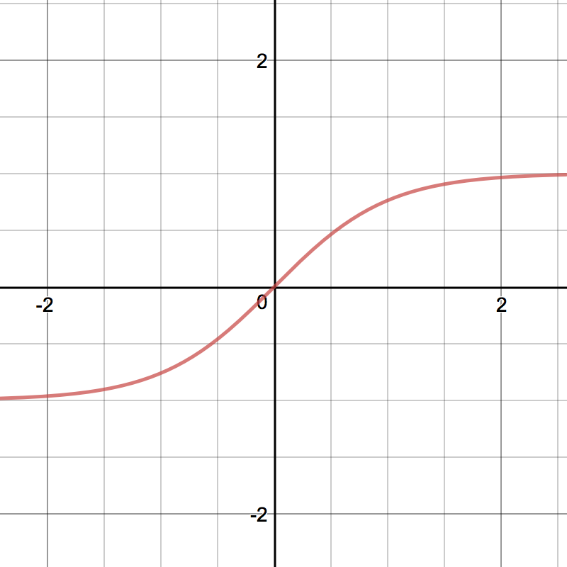 | 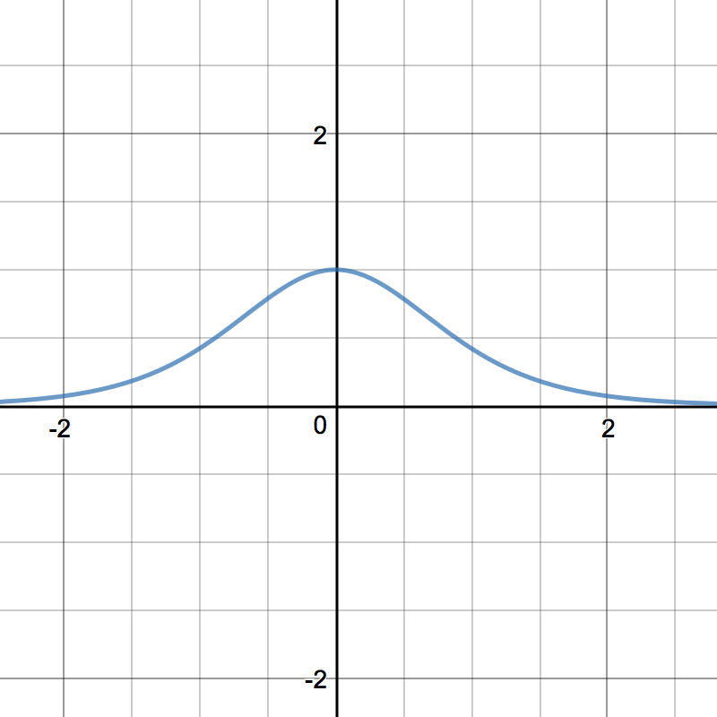 |
def tanh(z):
return (np.exp(z) - np.exp(-z)) / (np.exp(z) + np.exp(-z))
|
def tanh_prime(z):
return 1 - np.power(tanh(z), 2)
|
{kind=link}
{kind=link}
Pros
The gradient is stronger for tanh than sigmoid ( derivatives are steeper).
Cons
Tanh also has the vanishing gradient problem.
Softmax#
Softmax function calculates the probabilities distribution of the event over ‘n’ different events. In general way of saying, this function will calculate the probabilities of each target class over all possible target classes. Later the calculated probabilities will be helpful for determining the target class for the given inputs.
References